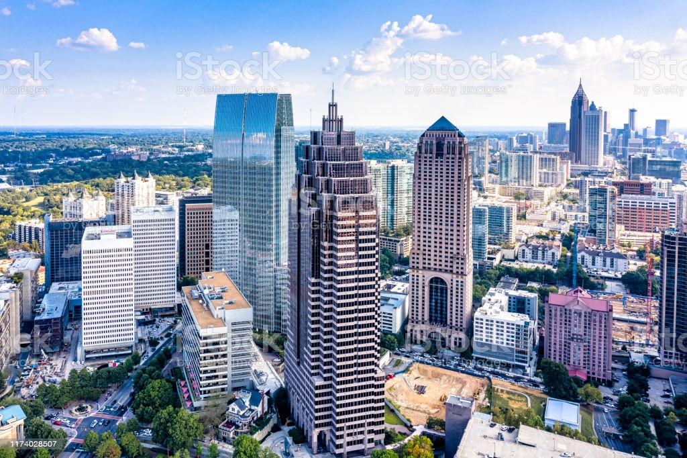

Bio
Hey - my name is Jerry LaGore. I am a Junior at MSU studying Information Science with a minor in I.T. Pretty much the same thing but the minor is in the business school. On campus, I am President of Spartan Blockchain, a blockchain technology education and consulting student firm. I am pretty interested and invested in this stuff but try to not let it define me too much... I live 45 minutes east of MSU so not too bad of a drive home. I was born and raised in Metro Atlanta but my parents/family are from Metro Detroit and we ended up moving back 6 years ago. Not sure where what city I want to work in after school but here is what I have thought about so far. I kind of want to live in a big city environment for a little while.
- 1. Chicago, IL
- 2. Detroit, MI
- 3. Atlanta, GA
- 4. New York, New York
- 5. San Francisco, CA
